Rreth Jori Mazelliu
Jori Mazelliu është një profesioniste e njohur në fushën e shëndetësisë, me përvojë si dentist në Bilisht, Devoll. Me pasion dhe përkushtim të madh, ajo ka ndjerë nevojën për një sistem shëndetësor modern, infrastrukturë të përmirësuar dhe krijimin e mundësive të reja për të rinjtë. Misioni i saj është të sjellë ndryshim konkret në komunitet, duke adresuar sfidat kryesore lokale dhe duke siguruar një të ardhme më të mirë për çdo qytetar.
Ajo premton të rinovohet spitali rajonal, të përmirësohen klinikat dhe të krijohen partneritete strategjike me sektorët privatë, përfshirë kompanitë bujqësore, për të sjellë programe trajnimi dhe zhvillimi profesional për të rinjtë. Gjithashtu, Jori synon të ngritë një qendër rinore që do të frymëzojë të rinjtë, duke i ofruar atyre mundësi edukative dhe praktike për të ndërtuar karrierat e tyre në fusha si inxhinieria, matematikë, shkenca kompjuterike, mjekësia dhe dentistia.
Vizioni dhe Misioni
Jori Mazelliu synon një Devoll me shëndetësi moderne, infrastrukturë të përmirësuar dhe ekonominë që u sjell shpresë të re për të rinjtë. Ajo beson se çdo qytetar meriton një jetë më të mirë dhe se investimet në arsim, shëndetësi dhe partneritete strategjike me sektorin privat janë çelësi i ndryshimit.
Një vizion i ri për një të ardhme më të ndritur
Pse Na Zgjidhni?
Jori sjell një qasje të re, me integritet, pasion dhe zgjidhje konkrete për sfidat që përballon Devolli. Ajo është e përkushtuar për të rinovuar shëndetësinë, përmirësuar infrastrukturën dhe krijuar mundësi për zhvillim ekonomik dhe arsimor.
Zgjidhje Praktike
Premtime konkrete për rinovimin e spitalit dhe modernizimin e shërbimeve shëndetësore në Devoll.
Inovacion dhe Rini
Programet për trajnime profesionale dhe ngritja e qendrave rinore për zhvillimin e karrierave të të rinj.
Integritet dhe Transparencë
Një administratë e pastër dhe e përkushtuar që lufton korruptimin dhe sjell ndryshim real.
Bashkohuni me Fushatën
Bashkohuni me Voluntarët Tanë
Na ndihmoni të ndërtojmë një Devoll me më shumë mundësi, ku secili qytetar ka shpresë për një të ardhme më të mirë.



Inspirim, inovacion dhe mundësi të pafund
Jemi këtu për të sjellë ndryshim në çdo fushë – nga shëndetësia tek arsimi, nga infrastrukturat tek ekonomia.
Jori Mazelliu synon të transformojë Devollin duke rinovuar spitalin rajonal, përmirësuar infrastrukturën dhe krijuar partneritete që sjellin programe trajnimi për të rinjtë.
Përmes përpjekjeve për një qeverisje të pastër dhe efikase, Jori premton të sjellë një Devoll më të mirë, ku çdo qytetar ka mundësi për zhvillim profesional dhe personal.
Jori synon të ngritë një qendër rinore që do të sjellë fjalime dhe trajnime nga ekspertë shqiptarë dhe të huaj, duke përfshirë fusha si inxhinieria, matematikë, IT, mjekësi dhe dentisti, për të ndihmuar të rinjtë të ndërtojnë karrierat e tyre.